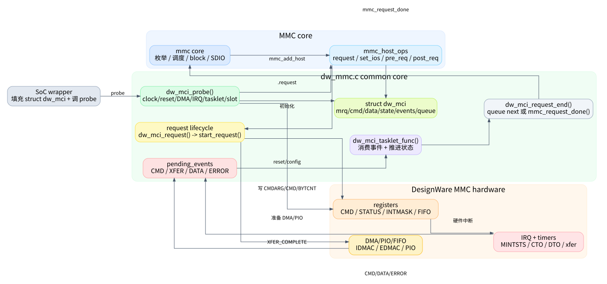

dw_mmc.c 从 0 吃透：阅读路线
这组文章的目标不是把 kernel/drivers/mmc/host/dw_mmc.c
画成一张大而全的状态图，而是让第一次读这个驱动的人能够建立稳定的心智模型：谁调用它、它如何注册到
MMC core、一个请求怎样从命令走到数据再结束、IRQ/timer/tasklet
怎么分工、DMA/PIO/时钟/电源各在什么位置介入。
建议按顺序读。不要从 dw_mci_tasklet_func()
开始硬啃；这个函数只是“事件消费者”，如果不知道请求如何进入、事件从哪里来、XFER_COMPLETE
和 DATA_COMPLETE
为什么不是一回事，状态机会显得非常晦涩。

文章清单
| 篇章 | 解决的问题 | 关键源码入口 |
|---|---|---|
| 00. 先建立心智模型 | 这个驱动在 Linux MMC 栈里处于哪一层，文件里有哪些“子系统” | kernel/drivers/mmc/host/dw_mmc.h:21,
kernel/drivers/mmc/host/dw_mmc.h:58,
kernel/drivers/mmc/host/dw_mmc.c:1884 |
| 01. probe 与 host 注册 | 设备起来时做了什么，MMC core 最终能调用哪些方法 | kernel/drivers/mmc/host/dw_mmc.c:3564,
kernel/drivers/mmc/host/dw_mmc.c:3144 |
| 02. 一个 request 的生命周期 | 一次读写请求如何排队、启动、发命令、准备数据、结束 | kernel/drivers/mmc/host/dw_mmc.c:1469,
kernel/drivers/mmc/host/dw_mmc.c:1363,
kernel/drivers/mmc/host/dw_mmc.c:1967 |
| 03. 数据路径：DMA、PIO 与 FIFO | 为什么有的请求走 DMA，有的回退 PIO，数据完成到底指什么 | kernel/drivers/mmc/host/dw_mmc.c:1128,
kernel/drivers/mmc/host/dw_mmc.c:1187,
kernel/drivers/mmc/host/dw_mmc.c:2810 |
| 04. IRQ/timer/tasklet 状态机 | 状态机每个状态等什么事件、消费后去哪、错误路径如何收尾 | kernel/drivers/mmc/host/dw_mmc.c:2171,
kernel/drivers/mmc/host/dw_mmc.c:2943,
kernel/drivers/mmc/host/dw_mmc.c:3326 |
| 05. 时钟、电源、CMD11 与 SDIO IRQ | set_ios()、setup_bus()、电压切换和 SDIO
中断为什么会影响状态机 |
kernel/drivers/mmc/host/dw_mmc.c:1498,
kernel/drivers/mmc/host/dw_mmc.c:1250,
kernel/drivers/mmc/host/dw_mmc.c:1638 |
| 06. 调试与读代码方法 | 卡住时看哪些 debugfs 节点、状态值如何解码、如何缩小范围 | kernel/drivers/mmc/host/dw_mmc.c:132,
kernel/drivers/mmc/host/dw_mmc.c:2037,
kernel/drivers/mmc/host/dw_mmc.c:1817 |
读者应该先记住的 6 个事实
dw_mmc.c是 DesignWare MMC host 的通用核心，具体 SoC wrapper 负责创建并填充struct dw_mci，然后调用dw_mci_probe()。- MMC core 只通过
mmc_host_ops进入这个文件，例如request、set_ios、start_signal_voltage_switch、enable_sdio_irq。 - 请求状态机由
host->state表示；事件由pending_events传给 tasklet；IRQ 和 timer 都只是事件生产者。 EVENT_XFER_COMPLETE表示内存/FIFO/DMA 这侧数据搬完了；EVENT_DATA_COMPLETE表示控制器看到卡侧 data over。二者不是同一个事件。CMD11有特殊两段式状态：命令完成后不是立刻回到IDLE，而是进入STATE_WAITING_CMD11_DONE，等待后续set_ios()/clock 流程收尾。- 读懂错误路径时，先问三件事：命令错了还是数据错了，当前是读还是写，是否还需要 stop/abort。
发布说明
这套文章发布前已经做过本地质量检查：文章文件齐全，SVG
引用存在，源码行号在当前 dw_mmc.c/.h
范围内，无占位符残留。公开页面只发布文章、图和静态站点文件；本地自检脚本不作为阅读内容发布。